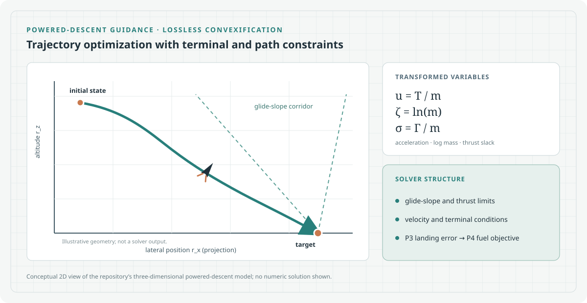

Mission presets
Earth and Mars parameters are defined in mission.py.

A compact trajectory-optimization project for powered descent, combining mission presets, a convex optimization solver, and interactive trajectory visualization.
Earth and Mars parameters are defined in mission.py.
The solver builds P3 and P4 powered-landing problems using LCVX variables and constraints.
Plotly visualization shows the 3D path and time-series telemetry.
mission.py and solver.py for the implemented assumptions and constraints. This repository is a powered-descent optimization example; it does not model every flight or landing effect.